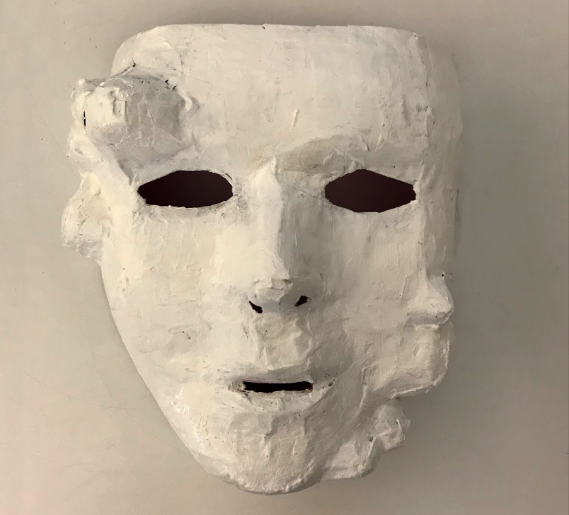

I created a kinetic mask and projections to express the difficulties of dealing with non-cathartic emotions.
Non-cathartic emotions are inconclusive feelings and thoughts such as loneliness, resentment, and depression. These emotions that can't be projected or released are always lingering and always carried throughout life. Difficult yet withstanding emotions can be difficult to speak about and express in a verbal manner. The mask controls the wearer by opening and closing at random to visualize the difficulty of vocalizing the emotions.

The mask was created with paper mache and newspaper to replicate and visualize the uncomfortable emotions and feelings that can build up. The movement of the mask was controlled by arduino servo motors attached to the inside of the mask. Projections were created in photoshop and projected when an individual wore the mask.
The mask and the projection's similar role of convering and transforming was an essential result from this study. The emergence of a physicalization of a non-cathartic, difficult to emote, abstract emotion was important in understanding how thoughts and feelings can manifest in an individual over time.